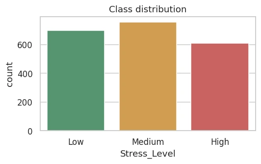
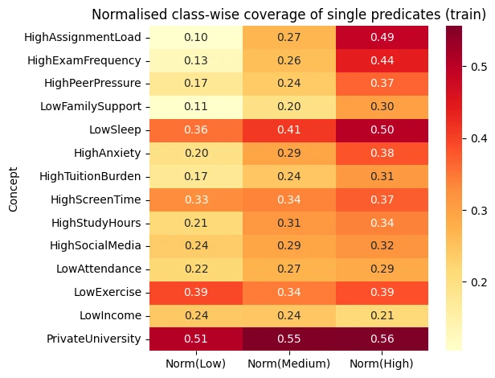
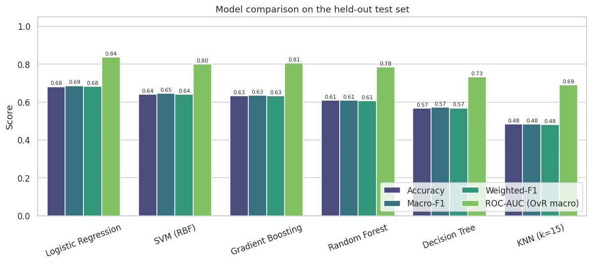
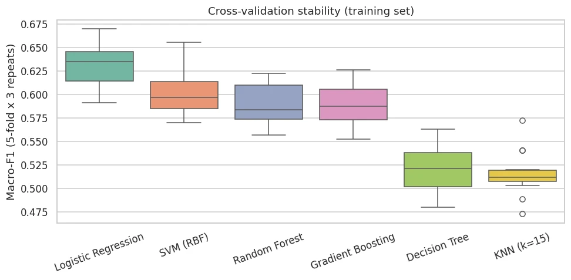
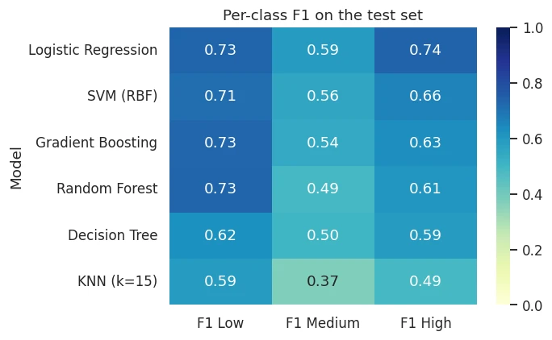
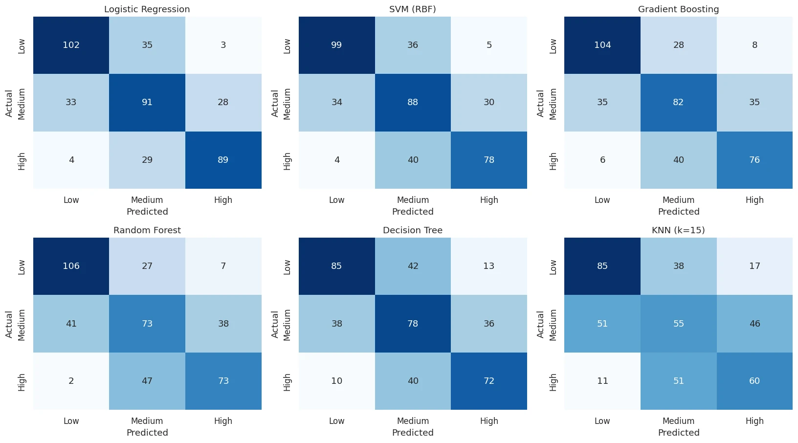
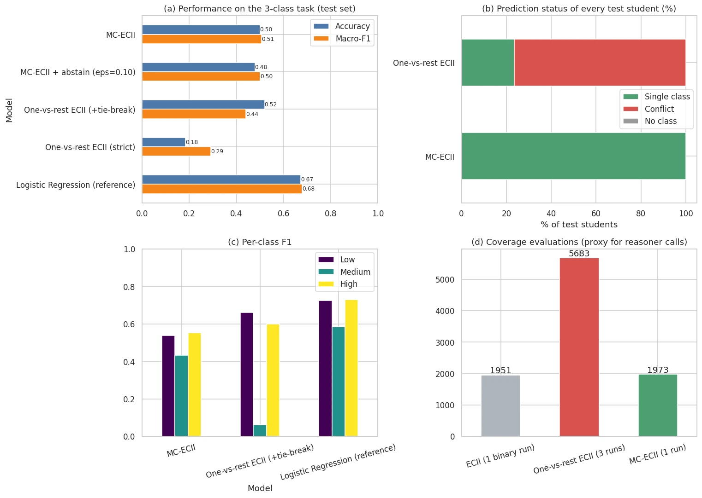
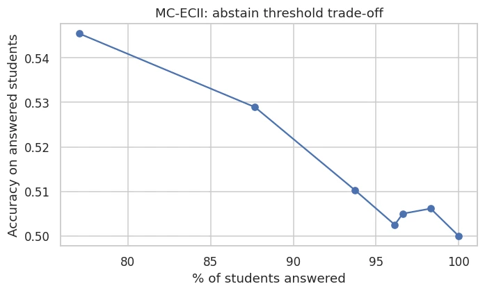

An ontology-guided multiclass concept learner (MC-ECII) that labels students Low, Medium or High stress and shows why, using readable Description-Logic concepts.
From a primary survey to an explainable classifier, with every stage reproducible.
29-question survey, 12-item stress scale (Cronbach alpha 0.885), leakage-controlled preprocessing.
OWL ontology with 14 DL predicates; HermiT matched direct computation on 300 of 300 students.
Each prediction comes with matched concepts such as Assignment Load = High and Exam Frequency = High.
Academic stress is common, but most classifiers give only a label. This work asks for a reason a counsellor can read and check.
Binary concept induction (ECII) explains well but handles two classes. Running it once per class (one-vs-rest) leaves 76.6% of test students with conflicting answers.
MC-ECII links every concept to one class through a size-normalised coverage vector and a margin, then scores classes and may abstain when evidence is weak.
Each stage has an Explain button that asks the AI explainer to walk through it.
Honest numbers on the 414-student test set.
Move the threshold to skip borderline students.
| Model | Accuracy | Macro-F1 | F1 Medium | Coverage evals |
|---|---|---|---|---|
| MC-ECII (proposed) | 0.500 | 0.507 | 0.432 | 1,973 |
| One-vs-rest ECII (tie-break) | 0.519 | 0.441 | 0.062 | 5,683 |
| Binary ECII (High vs Low only) | 0.672 | 0.662 | n/a | 1,951 |
| Logistic Regression (reference) | 0.681 | 0.687 | 0.593 | n/a |
MC-ECII trails Logistic Regression in accuracy. Its value is one class per student, a recovered Medium class, readable concepts, abstention and about 2.9x fewer evaluations than one-vs-rest.
Click any figure to enlarge.








Upload data, preprocess it, generate the ontology and train MC-ECII in your browser. The AI panel explains every step and shows its formulas with your own numbers.
CSV with the survey columns: Study_Hours, Class_Attendance, Sleep_Hours, Social_Media_Use, Screen_Time, Anxiety_Level, Exam_Frequency, Assignment_Load, Physical_Exercise, Peer_Pressure, Family_Support, Family_Income_Level, Tuition, University_Type and Stress_Item_1..12 (or Stress_Score).
Builds the 14 Description-Logic predicates from training quantiles, the predicate matrix and an OWL file.
A walkthrough of the research dashboard, data visualization, model evaluation, explainability and interactive risk prediction.
Slides with captions, no audio.
The notebooks, this website and the demo video live in one GitHub repository.
git clone https://github.com/pooja735/MC-ECII-for-Student-Mental-Health.git cd MC-ECII-for-Student-Mental-Health npx serve .
Open the notebooks in Google Colab and upload assets/sample.csv when asked. To deploy, import the repository in Vercel (no build command).
| Part | File |
|---|---|
| Survey sample data | assets/sample.csv |
| ML baselines | notebooks/ML_Model_Comparison… |
| Ontology and HermiT | notebooks/Ontology_Generation… |
| ECII, OvR, MC-ECII | notebooks/ECII_vs_MC_ECII… |
| Website and Lab | index.html |
| AI explainer API | api/chat.js |
| Demo video | videos/CSE25042_Demo.mp4 |
Ask about any processing step, metric or result.